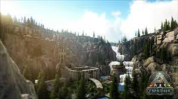

Dispone de muchos materiales , a parte de tener un traje tek para ayudar a la movilidad

Es un mapa muy bueno para farmear materiales, y conseguir dinosaurios aberrantes.
Lo malo es que no se pueden usar dinosaurios voladores.
Es el mejor mapa que xiste debido a que es grauito y están casi todos lo dinosaurios exclusivos.